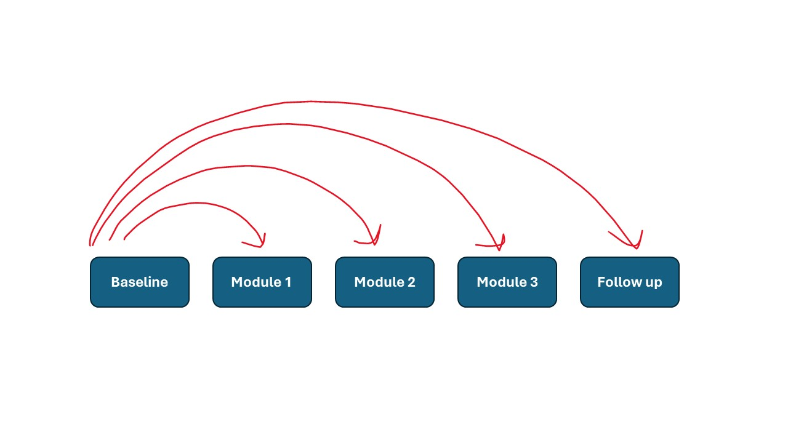
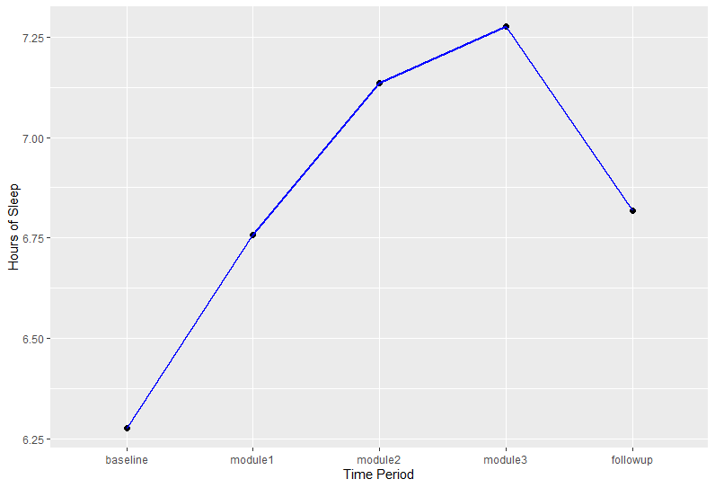
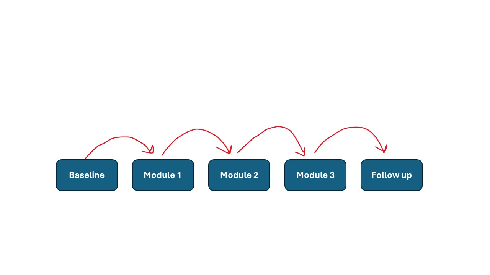
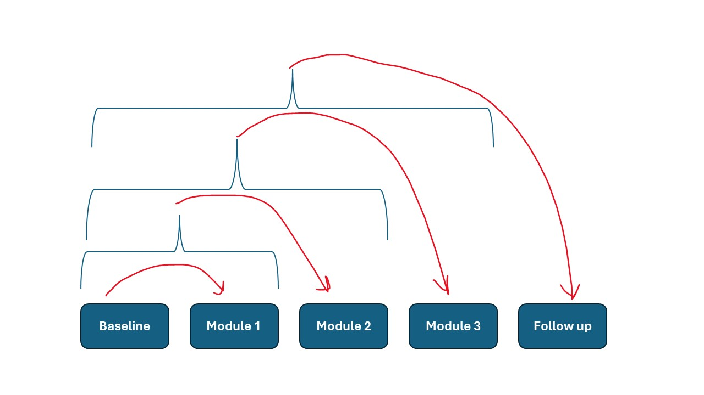
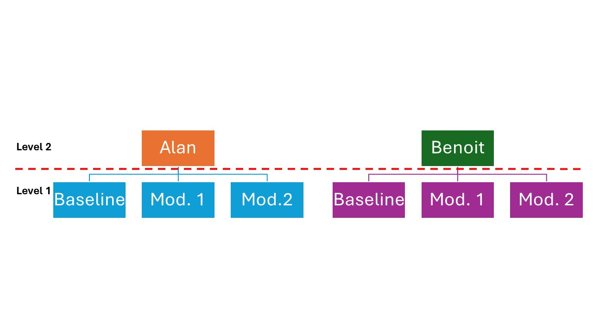

9 Within-Subject ANOVA
9.1 Learning Objectives
Know what a Within-Subject (Repeated) ANOVA is, and what kinds of research questions it can address.
Using an ANOVA approach to analyzing the data
Using a linear approach to analyzing the data
Using contrasts and post-hoc tests to describe differences in the data
Writing a within-subject ANOVA
If you will recall, I dropped a little note in Chapter ?? that indicated that with all of these “difference” models we’re talking about, you can also conceptualize them as linear models. For the most part, it won’t make a big difference between using difference versus linear approaches, but that is not the case for within-subject ANOVAs. So, first, we’ll talk about when we might use a repeated ANOVA, and then we’ll talk about how these two approaches differ, and how using one approach versus the other will affect your findings.
9.2 The Basics of Within-Subjects ANOVAs
Just as I noted in Section 8.1 that between subject ANOVAs are analogous to independent t-tests, I’ll note here that within-subject ANOVAs (also known as “repeated ANOVAs”) are analogous to dependent t-tests. Instead of re-testing our sample once, we retest them 2 or more times, which means we will have a minimum of 3 scores for each participant who completes our study.
And just as I noted in the dependent t-test, we are not too interested in differences between participants; instead, we are interested in how each participant changes across the different testing sessions. This is going to be hugely helpful for interventions and treatments, because our participants or patients might be wildly different in, for example, the symptoms they experience, but if we can improve the experience for all our participants, it’s not necessarily a concern if some participants don’t improve quite as much as someone who had a more severe issue.
Let’s walk through an example together to understand what this might look like. Imagine that we are working in a sleep clinic, and one problem a lot of our clients have is that they don’t have great “sleep hygiene” – that is, we know there are a lot of ways to improve your sleep habits (having bedtime rituals, using your bedroom only for sleeping, avoiding screens for at least an hour before bed) and we know our clients are not great about following these habits. So, we design a training program with several modules:
Module 1: Making your bedroom a sleep sanctuary
Module 2: Developing effective bedtime rituals
Module 3: Reducing screen use in the evening
Imagine that we get a baseline of how many hours per night, on average, our participants get before they begin our intervention, after each module, and than a 3-month follow up to see if the improvements are sticking. After our study, we might end up with a data set that looks like the Sleep Study data set I’ve created here.
| ID | baseline | module1 | module2 | module3 | followup |
|---|---|---|---|---|---|
| 1 | 6.02 | 6.46 | 6.21 | 6.43 | 4.73 |
| 2 | 7.00 | 7.70 | 7.71 | 8.20 | 7.93 |
| 3 | 5.58 | 6.39 | 6.92 | 8.26 | 6.89 |
| … | … | … | … | … | … |
You can see in this data that people are very diverse – some are getting a lot of sleep in general, and others are not. However, our goal is to help everyone in our sample get more sleep overall, so this data can help us learn about what modules improve their sleep, and whether they are able to maintain these improvements over time. So, we need to learn more about how changes between each measurement look across all our participants.
9.3 The ANOVA Approach to Within-Subject Data
One option for analysis is to basically extend a repeated t-test into a repeated ANOVA, where we simply calculate the differences between each score and establish if those differences are large enough and consistent enough for us to feel confident that a change is occurring. Here, this would look very similar to what we discussed in Section 7.4 – we would calculate the difference between each measurement and use that to establish whether any time period produced a large enough change to be significant. However, if we take this approach, we have a new assumption that we need to consider: sphericity
9.3.1 The Assumption of Sphericity
As we estimate the differences between each measurement period, we can also estimate the variance of these difference scores. For example, from the data provided in Table 9.2, we can see some (but not all) of the comparisons between measures in the table below:
| ID | baseline - module 1 | baseline - module 2 | baseline - module 3 | baseline - followup |
|---|---|---|---|---|
| 1 | -.44 | -.19 | -.41 | 1.29 |
| 2 | -.7 | -.71 | -1.2 | -.93 |
| 3 | -.81 | -1.34 | -2.68 | -1.31 |
| … | … | … | … | … |
| Variance of Difference Scores: | .05 | .32 | -2.75 | -2.16 |
We would have these comparisons across all measurements, and establish the variance of these difference scores. The assumption of sphericity indicates that these variances between difference scores should be roughly equal for all comparisons (that is, the average scores can be very different across each measure, but the variance in how much they change should be similar across all measures). We can see here, that doesn’t seem to be the case! So, in order to establish whether this is the case, we can conduct a test known as the Mauchly’s Test. The details of how this test is calculated is not particularly important; suffice it to say that if this test is significant, we need to make some adjustments to our results.
There are typically two corrections people use if there are issues with sphericity– the Greenhouse Geisser correction (which is a bit conservative) and the Huynh-Feldt correction. If you don’t use a correction when sphericity is violated, just know that you won’t have quite as much power, and it can lead to some funky results for your post-hoc tests. Pituch and Stephens (2016) recommends taking the average of the Greenhouse-Geisser and Huynh-Feldt values; Field (2009) astutely makes the argument that if there is a difference between the estimates (as in, the Greenhouse-Geisser yields a non-significant result while the Huynh-Feldt results in a significant result) that it’s a good idea to look at effect sizes to understand whether the result is important from a practical standpoint. I tend to take that approach.
In the case of this data, we see that there is a significant Mauchly’s test, and both the Greenhouse-Geisser and the Huynh-Feldt lead to significant findings, so the Greenhouse-Geisser correction is a good choice here. We obtain the following results:
| Source | SS | df | MS | F | Sig. |
|---|---|---|---|---|---|
| Variable | 23.97 | 1.65 | 14.56 | 19.57 | <.001 |
| Error | 47.77 | 64.20 | .74 |
So, these results indicate we have a significant ANOVA. Just as with other types of ANOVAs, a significant result simply indicates there is a significant difference between at least two measurements, but we’d need to use a contrast or a post-hoc to learn more about the nature of these differences. Just as with a one-way ANOVA, contrasts are best if we have specific comparisons we’d like to make, while a post-hoc is best if we want to compare all groups to one another. Post-hocs are generally the same as what we saw with a one-way ANOVA, but with contrasts, there are some common contrasts that are worth discussing.
9.3.2 Contrasts
While you certainly can program custom contrasts as you did with a one-way ANOVA, many programs allow you to use some pre-programmed contrasts with your data.
The first, and probably most straightforward, is what we generally call a simple contrast. With a simple contrast, we designate a particular measurement as our comparison group (usually this is the first or the last measurement in your data set, but it doesn’t have to be). In our example, perhaps we are curious about whether all time periods demonstrate a difference from our baseline measure. If that’s our question, a simple contrast makes a lot of sense:

If you run this, you’ll find these results:
| Comparison | F | Sig. |
|---|---|---|
| Baseline - Module 1 | 171.24 | <.001 |
| Baseline - Module 2 | 93.20 | <.001 |
| Baseline - Module 3 | 43.63 | <.001 |
| Baseline - Followup | 10.20 | .003 |
It can also help to look at a graph to understand the direction of the differences:

Ultimately, we see sleep improves during this program and stays higher than what it was at the baseline. Thus, we might conclude this training is helpful for improving sleep.
Another common option is what’s known as a repeated contrast. This is where you compare each adjacent measure. If our question is whether people keep improving over time, a repeated contrast is a good option:

If we chose to use this approach, we’d find the following results:
| Comparison | F | Sig. |
|---|---|---|
| Baseline - Module 1 | 171.24 | <.001 |
| Module 1 - Module 2 | 24.92 | <.001 |
| Module 2 - Module 3 | 1.55 | .22 |
| Module 3 - Followup | 28.55 | <.001 |
Here, we have a slightly different conclusion, because our question is different. In this case, we see that sleep improves after module 1 and module 2, but doesn’t significantly improve after people participate in module 3. So, perhaps students have learned what they need to learn, and there’s no need for module 3. We also see a significant drop between module 3 and the followup. It doesn’t go back to baseline, but it does seem to line up with where students were after module 1, so clearly some of the improvements are not sticking around for the long-term.
Another option that exists is the Helmert contrast. Here, you would compare each testing period to the mean of all periods that come before it:

This doesn’t make as much sense for our example, but you can imagine if we were conducting research where each measurement built on the ones before it (like if we were gradually increasing the dosage of a drug, or if we expected people to build on a skill over time) then the Helmert is a good option.
9.4 The Linear Model Approach to Repeated Measures
Throughout this book, you are going to learn that sometimes we might have several tests that do the same thing. This is the first example of this (and unfortunately, the most complicated). If you are taking a class, your instructor will hopefully tell you whether you need to read this section. I am going to warn those of you who feel nervous about math that it’s going to get a little bananas in this section. I’m sharing this with you to make two main points:
Linear models are often more accurate and appropriate, but sometimes they are a bigger pain in the neck than they are worth, depending on the statistical program you are using (e.g., linear models are annoying in SPSS, but are pretty easy in RStudio)
Sometimes (but not always) your results will be very different between an ANOVA and a linear model depending on what is going on in your data.
So here’s the deal:
Although historically we have treated repeated measures as ANOVAs, sometimes that is not exactly accurate. Part of what’s going on here is that we are, in some ways, violating the assumption of independence. One way to think about this is that we need to consider that humans are different from each other, and all of us have some idiosyncratic ways that we respond to items.

For example, maybe Alan is taking medications that make sleep difficult, and maybe Benoit is an athlete who feels drowsy even after getting 8 hours of sleep. What this means is that we will see some correlations among the scores that come from an individual; Alan will tend to have less sleep overall compared to Benoit. When that’s the case, we are dealing with something known as a multi-level model. Basically, we can think of each individual’s response (Level 1) as nested within that individual (Level 2). So, there are differences between each measure people provide, but there are also perhaps some meaningful differences between participants that we ought to consider (versus using an ANOVA, where those differences are basically tossed aside and ignored).
The main point I’m making here is this: an ANOVA is primarily focused on differences within an individual, and ignores differences between individuals. Meanwhile, a linear model allows us to look at changes within an individual plus differences between individuals. A linear model would allow us to answer more questions, such as:
Are there variables that lead to some people getting more sleep than others in general? (For example, maybe athletes get more sleep in general).
Are there variables that can explain how much a person is likely to change? (For example, maybe students who have busy schedules don’t improve much because they simply don’t have enough time for sleep, regardless of their sleep hygiene).
The math that goes into this is much too complex for our purposes, but if you are curious, I recommend taking a look at a book covering multi-level modeling, such as Luke (2026). Anyway, what matters here for our purposes are two key points:
Sometimes the results for an ANOVA versus a linear model can be quite different!
If you use a linear approach, it does not have sphericity as an assumption. So all that stuff about Greenhouse-Geisser and Huynh-Feldt? You get to skip that and just report an uncorrected F-test result!
In our case, if we run a linear model on the sleep data set, we end up with results that look like this:
| df1 | df2 | F | Sig. | |
|---|---|---|---|---|
| Sleep Hours | 4 | 156 | 19.57 | <.001 |
And here’s a repeated contrast for comparison with our results in the last section:
| Comparison | T-ratio | Sig. |
|---|---|---|
| Baseline - Module 1 | 3.88 | <.001 |
| Module 1 - Module 2 | 3.05 | .01 |
| Module 2 - Module 3 | 1.13 | 1.00 |
| Module 3 - Followup | -3.70 | .001 |
As we compare our results here with those from the previous section, we can see that the degrees of freedom are quite different, and we have some slightly different estimates for our contrast, but ultimately, we come to the same conclusion.
So, which approach should you use? Linear approaches are a more accurate way to model the data, but sometimes it can be more trouble than it’s worth if the difference is minor. It also matters which statistical program you are using – for example, it’s easier to run ANOVAs in SPSS, while it’s easier to run linear models in RStudio. For most students in an introductory stats class, the real answer is that you should do whatever approach your instructor recommends, and you can learn more about these two approaches in an advanced class later on if you want. :)
9.4.1 What to do if your assumption of normality and/or homoscedasticity are violated
I have some good news for you! We aren’t too concerned about normality or homoscedasticity in the variables themselves, we are more worried about this in the difference scores (sphericity). As I mentioned, if you are using an ANOVA, you can apply the Greenhouse-Geisser or Huynh-Feldt corrections if sphericity is a concern. If you are using a linear model, you don’t need to concern yourself wit sphericity at all.
9.4.2 Calculating an Effect Size for Within-Subject T-Tests
Even more good news – the effect size is calculated the same way as for a between-subject t-test – we use \(\hat{\omega}^2\) :
\(\hat{\omega}^2=\frac{SS_M-(df_M)MS_R}{SS_T+MS_R}\)
9.4.3 Writing the Results of a Within-Subject ANOVA
When sharing the results of a between-subject ANOVA, you want to convey several pieces of information to your audience:
You should indicate that you are conducting a within-subject ANOVA or a repeated ANOVA (they mean the same thing). It is also helpful to explain whether you are using an ANOVA or a linear model approach.
What the means and standard deviations are for each testing period.
The F-test value, its degrees of freedom, and its significance;
In some cases, the effect size
If you find a significant omnibus test, you should conduct a contrast or post-hoc test and explain your results. Depending on the software you use and which post-hoc you choose, you may not have access to t-test results for the individual post-hoc tests. Provide as much information as you can, with the p-value being the bare minimum.
Here are a couple of examples of how we might write our results
To examine the effect of our intervention on sleep, I conducted a repeated ANOVA with a Greenhouse-Geisser correction ( \(\epsilon\) = .41) , which was significant, F(1.65, 64.20)=19.57, p<.001. A repeated contrast indicated that there were significant improvements in sleep from the baseline to after the first module (p<.001) and between the first module and the second module (p<.001). The improvements tapered off between the second module and the third module (p=.22), and there was a significant decrease in sleep between module 3 and the follow up (p<.001).
A linear model ANOVA revealed a significant effect, F(4, 156)=19.57, p<.001. As shown in Figure 6.6, participants experienced an increase in sleep after each module, but a decrease in sleep at the follow up. However, a simple contrast indicates that all time periods demonstrate significantly more sleep compared to the baseline, suggesting that the treatment produces lasting improvements in sleep among participants.